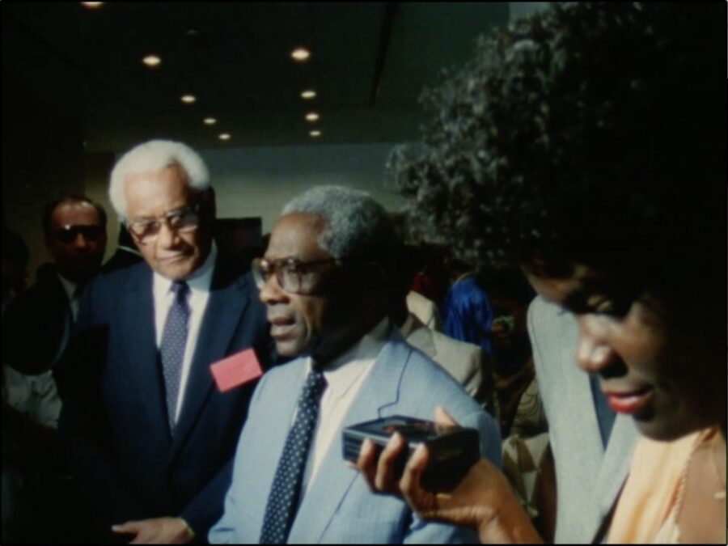

Sarah Maldoror: And the Dogs Were Quiet / Aimé Césaire: The Mask of Words (1978 / 1987)
Sarah Maldoror: And the Dogs Were Quiet / Aimé Césaire: The Mask of Words (1978 / 1987) · 13m / 57m · DCP
The final program of the series is dedicated to Aimé Césaire — poet, politician, revolutionary — and one of Maldoror’s most important mentors and friends. And the Dogs Were Quiet puts the Martiniquais landscape and the backrooms of the Musée de l’Homme into dialogue, where Maldoror and Gabriel Glissant adapt Césaire’s play of the same name. The Mask of Words is a meeting between Maldoror, Césaire, and the Senegalese poet Léopold Sédar Senghor, discussing the power of Négritude theater and poetry as a “relief lung,” in the words of Césaire. —
Sarah Maldoror: To Make a Film Means to Take a Position
Sarah Maldoror’s mentor, collaborator, and friend Aimé Césaire described her as a figure who, “camera in hand, fights oppression, alienation, and defies human bullshit [qui, caméra au poing, combat l’oppression, l’aliénation et défie la connerie humaine].” And indeed, the pioneer French-Guadeloupean filmmaker’s work was a practice of building revolution with the film-camera, marked by a militance, formal rigor, and generosity from the beginning. Born in southwestern France, Maldoror moved to Paris at a young age, where, in 1956, she cofounded a theatrical troupe of Black and Caribbean actors. The company of les Griots, named for West African traveling poets and oral historians, cultivated collaborations with Toto Bissainthe and Wifredo Lam. Maldoror later crossed paths with Ousmane Sembène while studying the Gerasimov Institute of Cinematography in Moscow, and with Gillo Pontecorvo and William Klein while assistant directing The Battle of Algiers and Festival panafricain d’Alger. Best known for her groundbreaking works Monangambééé and Sambizanga, Maldoror had an expansive oeuvre of more than 45 shorts, documentaries, and feature films. This small sampling of her lesser-known work shows a filmmaking of restless openness, curiosity, and exchange. Maldoror cultivated a filmic forum for engagement with pan-Africanism, Négritude, and Third Cinema, creating a network of global exchange linking Rabat, Algiers, Tunis, Conakry, Cape Verde, Bissau, Moscow, Fort-de-France, and Saint-Denis. Her work represents not only a sort of “filmography as bibliography,” in the words of Yasmina Price, but a cinema as poetry, cinema as history, cinema as solidarity.
All films courtesy of Annouchka de Andrade and l’Association des Amis de Sarah Maldoror et Mario de Andrade.